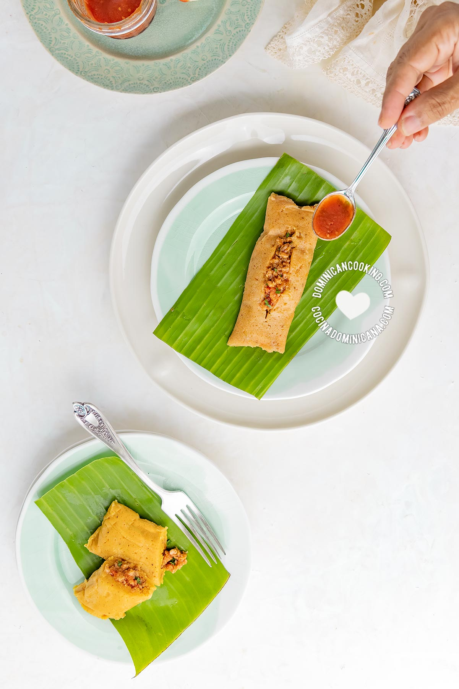

Pasteles en Hoja
Description
Pasteles en hoja are a Dominican cultural favorite, often appearing at the table during Christmas and New Year's Eve. These tasty treats are a lot like tamales but instead of being made with corn, they are made with root vegetables.
Ingredients
Batter Ingredients
- Blender or food processor
- Your choice of filling
- 1 plantain
- 1/3 lb of taro
- 1/3 lb of kabocha squash
- 1 tablespoon seasoning powder
- 1 cup milk
- 1 1/2 teaspoon salt
- 2 tablespoon salted butter
- 1 tablespoon annato powder
Wrapping Ingredients
- 12 Banana tree leaves squares
- 12 pieces of parchment paper (cut to the same size as the banana leaves)
- food safe twine
Filling Recipes
Steps
- Chop the plantain, taro, and squash into chunks small enough for your blender or food processor to handle.
- Placed the chopped plantain, taro, and squash into your food processor or blender.
- Pureé the chopped vegetables until it's uniform, feeling as though it has grains of sand in it. This may take between 5-10 minutes. Make sure there are no clumps in the pureé.
- Place a piece of parchment paper on a clean level surface.
- Place a banana leaf directly on top of the parchment paper.
- Place 2 1/2 tbs of the batter in the center of the banana leaf.
- Place 2 tbs of your filling of choice on top of the batter that is already on the leaf.
- Place 2 more tbs of batter on top of your filling of choice.
- Fold the banana leaf into the rectangular shape of an envelope, encompassing your batter and filling.
- Fold the parchment paper into the rectangular shape of an envelope, around the banana leaf.
- Wrap the pasteles shut with your twine. For clearer instructions on how to wrap them, see this video.
- Repeat steps 4-11 until you've wrapped all 12 pasteles.
- Bring 1 gallon of water to a rolling boil (medium heat).
- Carefully place all 12 pasteles into the water.
- Place a lid on the pot and allow to boil for 20 minutes.
- Using tongs, flip the pasteles in the boiling water.
- Place a lid on the pot and allow to boil for another 20 minutes.
- It's time to test if they're ready! Carefully remove one of the pasteles from the water. Unwrap it and check if it's ready, it's consistency should resemble the photo above.
- If it's not ready, re-wrap the opened one and place it back into the pot. Boil the pasteles for another 10 minutes.
- Once the pasteles are ready, turn off the stove and carefully remove the water from the pot.
- Serve the pasteles immediately after unwrapping. They'll be piping hot and ready to enjoy, careful not to burn yourself!